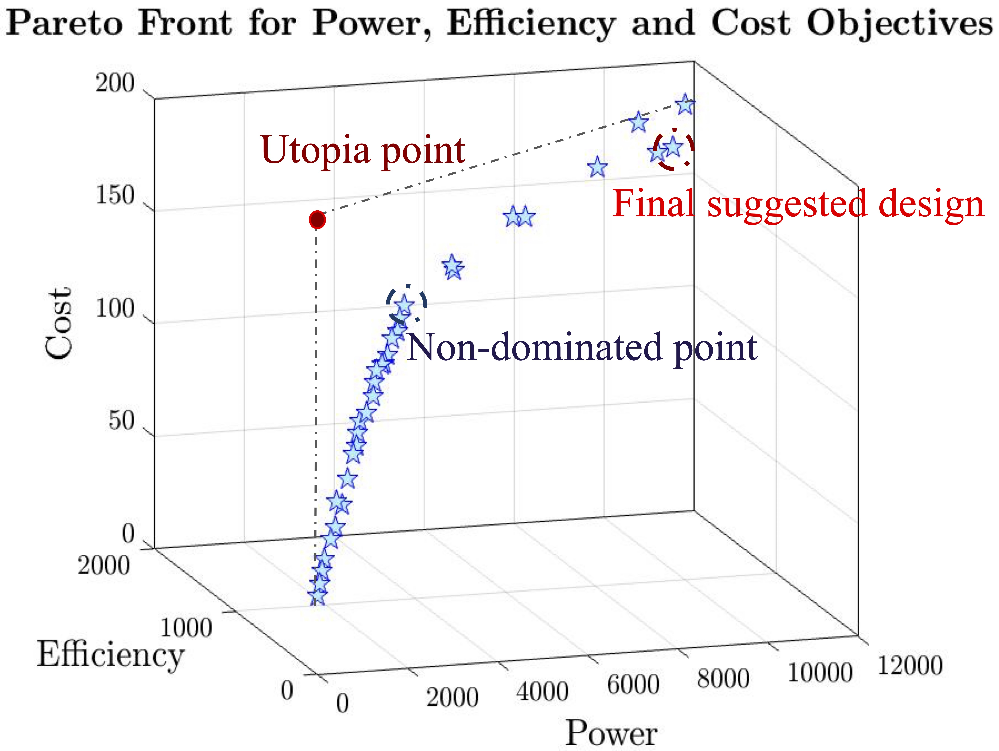

TherMaG: Engineering Design of Thermo-Magnetic Generator using Multi-objective Genetic Algorithm
William Hintlian, Mads Peter Berg, Hanfeng Zhai, Maha Haji
Sibley School of Mechanical and Aerospace Engineering, Cornell University
Motivation & Intro
Novel clean and green energy technologies are in strong demand as the world moves towards sustainability. Recovering waste heat is a step in the right direction, but very few technologies can convert low-grade waste heat into electricity. The so-called thermo-magnetic generator is one. Here, we present efforts undertaken in designing and optimizing a thermo-magnetic generator (TMG), using a multi-objective genetic algorithm (GA) and other approaches. Our optimization has been of a simple structure with the basic design scheme denoted, genus 1, (by Waske et al., Nat. Energy, 2019), where the structure is variant only in two dimensions. The optimization objectives are cost, power output, and the energy efficiency of the TMG, with the geometric quantities of heights and the widths of different parts as input design variables. The parameters are the physical properties, i.e., magnetic permeability, thermal diffusivity, etc., of the different parts and the ambient air as well as the operating settings, i.e., when to start and stop heating the active material, which we have not been considering the optimization of. Single objective optimization was applied to cost, power output, and efficiency, which provided us with three different designs. The effects of each design variable were also estimated, indicating that the "width of the gap" is the most effective factor for cost. Multi-objective optimization was applied to both cost, power output, and efficiency. It is found that using a genetic algorithm, worked significantly better for this particular problem, than a gradient-based one. We eventually present a suggested design as the TMG with the highest power per cost, generated from the multi-objective optimization. These studies can all provide guidelines and insights for future TMG design.
The genius idea of the thermo-magnetic generator can be traced back to Nicola Tesla [Tesla, 1889]: Originally named Pyromagneto-Electric Generator, whose idea employs two well-known laws: First, that electricity or electrical energy is developed in any conducting-body by subjecting such body to a varying magnetic influence. Second, the magnetic properties of iron or other magnetic substance may partially or entirely be destroyed or caused to disappear by raising it to a certain temperature, but it restored and caused to reappear by again lowering its temperature to a certain degree. The Tesla and Edison [Edison, 1892] patents originated more than 100 years ago formulated our basics to design such a machine.
Problem Formulation
Basic modules
The problem of optimizing a TMG is put into a standard framework follows the standard form by Agte et al., Struct Multidisc Optim, 2010, which is outlined below
$\min {\bf J}(\mathbf{x}, \mathbf{p}) = [J_1, J_2, J_3]^{\sf T}\\ \mathbf{x} = [x_1, ..., x_5]^{\sf T},\ \mathbf{p} = [p_1, ..., p_m]^{\sf T}\\ x_{i,LB}\leq x_i \leq x_{i,UB},\quad i = 1,2,...,5\\ {\rm s.t.}\quad {\bf g(x,p)}<0,\ {\bf g} = [g_1, g_2, g_3]^{\sf T}\ $

We here consider a full thermo-magnetic system which has a thermal cycle given by the time it takes to heat up and cool down the active material. The thermo-magnetic generator furthermore has a power output which is taken from the change in total magnetic flux streaming through the active material, around which the coil is wrapped, so that a current is induced electromagnetically.

The power output is taken as the energy produced over one thermal cycle through the change in this magnetic flux divided by the time it takes for the thermal cycle to come to completion. The efficiency is the total power produced during a thermal cycle divided by the heat energy that has been put into the system and thus, consumed. The heat energy is taken with respect to the ambient temperature and is thus the exergy loss over a thermal cycle. The total cost of the system is taken as the volumetric sum of all the material that has gone into the device, weighted by the volumetric cost of each type of material, i.e. the expense required to procure all the material for the device. For more details please check our report.
Modeling & Simulation
We decouple the thermal and magnetic modules since a coupled simulation would be extremely time consuming. Here, the incremental inter-dependencies of temperature and the magnetic field during the heating are neglected, as we consider only the extrema of the cycle. We thus only focus on the magnetic permeability of the active material when at its hottest and coldest. It turns out that when we heat from $300 \mathrm{K}$ to $310 \mathrm{K}$ the active material will transition from being completely guiding to completely non-guiding. Gadolinium will transition between having the magnetic properties of air to the magnetic properties of iron, which means that we are effectively opening and closing a gap in the "magnetic circuit". To reiterate: having to go all the way between these two extremes over a cycle will likely be sub-optimal, but in this project we are only concerned with optimization of the geometry, and not with how the thermal cycle is carried out. The magnetic module simulations are thus split in two cases - hot and cold conditions for the active material. The difference in total magnetic flux is then computed from these two separate cases. Another module computes all of the thermodynamics: how long it takes for the active material to heat up, so that every point is hotter than the minimum temperature of $310 \mathrm{K}$, and it computes the temperature distribution throughout the device. Combining this data in the separate ways described above, we achieve both expressions for efficiency and for power output. We thus run 2 magnetic simulations and 1 thermal simulation, altogether. The workflow and the decouplings are illustrated in the block diagrams, where a block diagram and an $N^2$ diagram are used to illustrated out simulation-optimization loop. Note that the $N^2$ diagram has abbreviations in it.
The model is built in COMSOL Multiphysics using adaptive geometry and adaptive meshes. Despite this, computation times per simulation varied quite a lot, and could be anywhere from $10 \mathrm{s}$ and $5 \mathrm{min}$. The mesh was adaptive, so it is not because that larger structures have a lot more finite elements to go over. The magnetic simulations are all computed independently of time, and the computation time is thus the same for them; however, the thermal module is time-dependent, and if the active material becomes very thick and and the yoke very wide, then the heating time will increase non-linearly and extremely fast, as can be seen by solving the 2-dimensional heat-diffusion equation with the boundary conditions of a constant point source (which is the situation we get if the width of the active material is very small compared to the widths of the yoke). Just as the space step (the mesh) was adaptive, the time step could have been made adaptive too. Unless sacrificing accuracy however, the devices that have longer heating times will inherently also have longer computation times, a link between Matlab and COMSOL was established such that a Matlab script could vary the design variables, feed it into COMSOL, and get the efficiency, the power output, and the total system cost in return. This procedure was used to get the function evaluations required in the optimization algorithms that have been applied.
Optimization & Results
Multi-objective Optimization
To be concise, we here only show our results on multi-objective optimization and how we propose our final suggested design. If you are interested in how we carried single objective optimization, please refer to Report III, Report IV, and Final Report for details. After successfully implementing optimization algorithms for each of the TMG's individual objectives, the team worked to combine all objectives into one genetic algorithm based optimization. The team opted to use a heuristic method for the three objective optimizations to reduce complications due to inconsistency. We first explored a genetic algorithm to optimize cost only to verify that it would behave as expected, as a gradient-based method had previously been used to optimize cost. Although the cost GA was not perfectly consistent, it did successfully find the global optimum many times during our testing. Because we already established more complicated issues with applying gradient methods to the power and efficiency objectives, a multi objective genetic algorithm was a clear choice for our problem due to its compatibility with our objectives and ease of implementation.

In selecting hyperparameters for the algorithm, we had two main objectives in mind. First, we wanted to find enough points along the Pareto front to easily visualize the geometric changes between each non-dominated point. Second, we needed to the total run time to not exceed 12 hours so that at least one attempt could be made each day while adjusting algorithm hyperparameters or model settings to increase the algorithm's effectiveness. We found that using a larger population size was the easiest way to increase the population density along the Pareto front, and settled on 100 as a balance between high density and increasing run time. We used the same crossover function as for our single objective optimization because we had previously observed good behavior with it. The other parameters are function tolerance and stall generations, which dictate the stopping conditions for the algorithm. When the geometric average of the Pareto front spread across all generations divided by maximum stall generations is less than the function tolerance, the algorithm will halt further optimization. With this in mind, we adjusted function tolerance and max stall generations to achieve a run time of approximately eight hours for the multi objective optimization to create the Pareto front shown in the beyond figure

Final Suggested Design
The final selected design is indicated in the figure below. Although the selected vector is far from the utopia point, we must consider value and practicality factors in the decision. The left sub figure shown below shows a value based analysis of each point along the Pareto front.

As power and efficiency increase, so does performance per dollar. We observe that at the Pareto front's turning point there is a distinct increase in the trend rate of performance per dollar. This curve may have an optimal point outside of our constrained design space. Considering the practicality of our final design, we return to the overall goal of our thermo-magnetic generator: The device should convert heat energy into usable electrical energy. If used to recapture waste heat in an engineering environment, it stands to reason that achieving the highest efficiency possible may tip the scales of the value proposition offered by implementing the device. Although we do not at this stage know the true efficiency of the device, we do know that along our Pareto front the most efficient design is more than 75 times more efficient than the least efficient design. Based on this observation we assume that most of our computed non-dominated points would not be practical enough to use in the real world. Thus, we select the geometry displayed in the above figure with the following design variable levels: $[w_{yk}, h_{yk}, h_{pm}, h_A, w_{gap}] = [0.0152, 0.1009, 0.0855, 0.0140, 0.0100]$. The corresponding objectives are $\rm Cost = \$167.71$, $\rm Power\ output = 11205$, $\rm Efficiency = 1832.6$.
If you are interested in our project or want to reach out for further details, feel free to contact any of the tem members using the E-mail link below; or directly contact Professor Maha Haji.